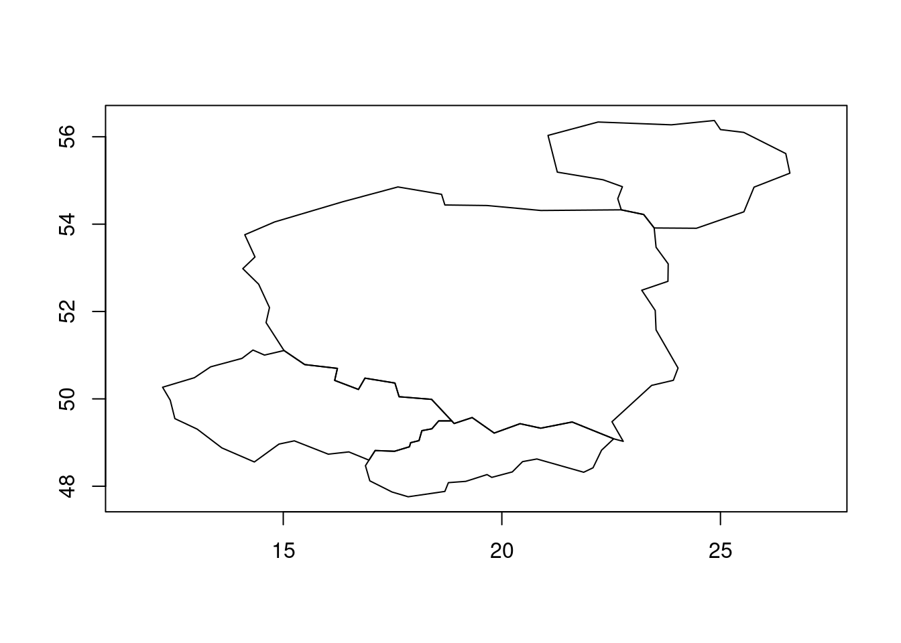

# Install remotes if not already installed
if (!requireNamespace("remotes")) {
install.packages("remotes")
}
# The packages we'll use
pkgs = c(
"sf",
"tidyverse",
"geos",
"ggspatial",
"spData"
)Tidy geographic data
with sf, dplyr, ggplot2, geos and friends
These materials were created for the OpenGeoHub Summer School 2023.
They can be used with reference to the accompanying slides, available at ogh23.robinlovelace.net/opengeohub2023.
See the parent repo and session description in the agenda for context.
Abstract
This lecture will provide an introduction to working with geographic data using R in a ‘tidy’ way. It will focus on using the sf package to read, write, manipulate, and plot geographic data in combination with the tidyverse metapackage. Why use the sf package with the tidyverse? The lecture will outline some of the ideas underlying the tidyverse and how they can speed-up data analysis pipelines, while making data analysis code easier to read and write. We will see how the following lines:
library(sf)
library(tidyverse)can provide a foundation on which the many geographic data analysis problems can be solved. The lecture will also cover on more recently developed packages that integrate with the tidyverse to a greater and lesser extent. We will look at how the geos package, which provides a simple and high-performance interface to the GEOS library for performing geometric operations on geographic data, integrates with the tidyverse. The tidyverse is not the right tool for every data analysis task and we touch on alternatives for working with raster data, with reference to the terra package, and alternative frameworks such as data.table. Finally, we will also look at how the ‘tidy’ philosophy could be implemented in other programming languages, such as Python.
The focus throughout will be on practical skills and using packages effectively within the wider context of project management tools, integrated development environments (we recommend VS Code with appropriate extensions or RStudio), and version control systems.
1 Learning objectives
By the end of the session, participants will be able to:
- Read, write, manipulate, and plot geographic data using the
sfpackage - Use the
tidyversemetapackage to speed-up the writing of geographic data analysis pipelines - Use the
geospackage to perform geometric operations on geographic data - Understand the strengths and weaknesses of the
tidyversefor geographic data analysis
2 Prerequisites
We recommend you run the code in the practical session with a modern integrated development environment (IDE) such as
- RStudio: an IDE focussed on data science and software development with R. See posit.co for installation instructions.
- VS Code: a general purpose, popular and future-proof IDE with support for R. See github.com/REditorSupport/vscode-R and quarto.org for installation instructions.
After you have installed a suitable IDE you will need to install R packages used in this tutorial. You can install the packages we’ll use with the following commands:
remotes::install_cran(pkgs)After running the above commands, you should be able to load the packages with the following command (we will load the packages individually in subsequent sections):
sapply(pkgs, require, character.only = TRUE)3 An introduction to tidy geographic data
The tidyverse is a collection of packages that provides a unified set of functions for data science. The name ‘tidyverse’ is a reference to the ‘tidy data’ concept, which means simple data that is in the form of one observation per row and one variable per column (Wickham 2014). The meaning has broadened to refer to a way of doing data analysis, that tends to make heavy use of tidyverse packages. Load the tidyverse with the following command:
library(tidyverse)── Attaching core tidyverse packages ──────────────────────── tidyverse 2.0.0 ──
✔ dplyr 1.1.2 ✔ readr 2.1.4
✔ forcats 1.0.0 ✔ stringr 1.5.0
✔ ggplot2 3.4.3 ✔ tibble 3.2.1
✔ lubridate 1.9.2 ✔ tidyr 1.3.0
✔ purrr 1.0.2
── Conflicts ────────────────────────────────────────── tidyverse_conflicts() ──
✖ dplyr::filter() masks stats::filter()
✖ dplyr::lag() masks stats::lag()
ℹ Use the conflicted package (<http://conflicted.r-lib.org/>) to force all conflicts to become errorsAs shown in the output, the package loads 9 sub-packages. In this tutorial we will focus on
dplyr, which provides convenient functions for manipulating data framesggplot2, which provides a powerful and flexible system for creating plots
A good way to understand it is to get started with a small dataset. So let’s load the sf package and the spData package, which contains the world dataset:
library(sf)Linking to GEOS 3.10.2, GDAL 3.4.1, PROJ 8.2.1; sf_use_s2() is TRUElibrary(spData)The legacy packages maptools, rgdal, and rgeos, underpinning the sp package,
which was just loaded, will retire in October 2023.
Please refer to R-spatial evolution reports for details, especially
https://r-spatial.org/r/2023/05/15/evolution4.html.
It may be desirable to make the sf package available;
package maintainers should consider adding sf to Suggests:.
The sp package is now running under evolution status 2
(status 2 uses the sf package in place of rgdal)To access larger datasets in this package, install the spDataLarge
package with: `install.packages('spDataLarge',
repos='https://nowosad.github.io/drat/', type='source')`After loading the packages run the following commands to create an object called countries, containing countries whose centroids are within 200km of the Polish border:
names(world) # check we have the data [1] "iso_a2" "name_long" "continent" "region_un" "subregion" "type"
[7] "area_km2" "pop" "lifeExp" "gdpPercap" "geom" poland = world |>
filter(name_long == "Poland")
world_centroids = world |>
st_centroid()Warning: st_centroid assumes attributes are constant over geometriescountry_centroids = world_centroids |>
st_filter(poland, .predicate = st_is_within_distance, dist = 2e5)
countries = world |>
filter(name_long %in% country_centroids$name_long)
countries_df = countries |>
select(name_long, pop, area_km2) |>
st_drop_geometry()Don’t worry about the syntax for now. The important thing is that we now have a data frame with three columns, representing the name, population and area of four countries. We can print out the contents of the data frame by typing its name (this is equivalent to print(countries_df)):
countries_df# A tibble: 4 × 3
name_long pop area_km2
* <chr> <dbl> <dbl>
1 Poland 38011735 310402.
2 Lithuania 2932367 63831.
3 Slovakia 5418649 47068.
4 Czech Republic 10525347 81208.The output above shows information about each country in a tabular. A feature of the tidyverse is that its default data frame class (the tibble which extends base R’s data.frame as shown below) prints results in an informative and space-efficient way.
class(countries_df)[1] "tbl_df" "tbl" "data.frame"ggplot2 is dedicated plotting package that is loaded when you load the tidyverse. It has native support for geographic objects, as shown in the figure below which shows the output of plot(countries) next to the equivalent ggplot2 code.
plot(countries)Warning: plotting the first 9 out of 10 attributes; use max.plot = 10 to plot
allcountries |>
ggplot() +
geom_sf()

3.1 Pipes
A characteristic feature of the tidyverse is the use of the pipe operator. You can use R’s new native pipe operator (|>), first available in R 4.1.0, or the magrittr pipe operator (%>%). The pipe operator is used to chain together functions, making it easier to read and write code. It can be particularly useful when used in combination with RStudio’s intellisense feature, which provides suggestions for column names as you type. Try typing the following in RStudio and hitting Tab with the curso located between the brackets on the final line to see this in action. It will allow you to select the variable you’re interested in without quote marks, using a feature called non-standard evaluation (NSE) (Wickham 2019).
countries_df |>
filter()3.2 Reading and writing geographic data
You can read and write a wide range of vector geographic data with sf. Save the countries object to a file called countries.geojson and inspect the result.
sf::write_sf(countries, "countries.geojson", delete_dsn = TRUE)You can read the file in again with read_sf() (which returns a ‘tidyverse compliant’ tibble data frame) or st_read(), as shown below.
countries_new1 = sf::read_sf("countries.geojson")
countries_new2 = sf::st_read("countries.geojson")Reading layer `countries' from data source
`/home/runner/work/opengeohub2023/opengeohub2023/countries.geojson'
using driver `GeoJSON'
Simple feature collection with 4 features and 10 fields
Geometry type: MULTIPOLYGON
Dimension: XY
Bounding box: xmin: 12.24011 ymin: 47.75843 xmax: 26.58828 ymax: 56.37253
Geodetic CRS: WGS 84For most purposes the two representations are the same, although the ‘tibble’ version’s print outpout is slightly different.
countries_new1 |>
head(2)Simple feature collection with 2 features and 10 fields
Geometry type: MULTIPOLYGON
Dimension: XY
Bounding box: xmin: 14.07452 ymin: 49.0274 xmax: 26.58828 ymax: 56.37253
Geodetic CRS: WGS 84
# A tibble: 2 × 11
iso_a2 name_long continent region_un subregion type area_km2 pop lifeExp
<chr> <chr> <chr> <chr> <chr> <chr> <dbl> <dbl> <dbl>
1 PL Poland Europe Europe Eastern Eu… Sove… 310402. 3.80e7 77.6
2 LT Lithuania Europe Europe Northern E… Sove… 63831. 2.93e6 74.5
# ℹ 2 more variables: gdpPercap <dbl>, geometry <MULTIPOLYGON [°]>countries_new2 |>
head(2)Simple feature collection with 2 features and 10 fields
Geometry type: MULTIPOLYGON
Dimension: XY
Bounding box: xmin: 14.07452 ymin: 49.0274 xmax: 26.58828 ymax: 56.37253
Geodetic CRS: WGS 84
iso_a2 name_long continent region_un subregion type
1 PL Poland Europe Europe Eastern Europe Sovereign country
2 LT Lithuania Europe Europe Northern Europe Sovereign country
area_km2 pop lifeExp gdpPercap geometry
1 310402.33 38011735 77.60244 24347.07 MULTIPOLYGON (((23.48413 53...
2 63831.09 2932367 74.51707 26258.21 MULTIPOLYGON (((26.49433 55...A nice function to explore the differences between the two objects is waldo::compare(). It shows that, other than their classes, the two objects are identical:
waldo::compare(countries_new1, countries_new2)`class(old)`: "sf" "tbl_df" "tbl" "data.frame"
`class(new)`: "sf" "data.frame"See the full list of file formats that you can read and write with sf with the following commands:
drvs = sf::st_drivers() |>
as_tibble()
head(drvs)# A tibble: 6 × 7
name long_name write copy is_raster is_vector vsi
<chr> <chr> <lgl> <lgl> <lgl> <lgl> <lgl>
1 ESRIC Esri Compact Cache FALSE FALSE TRUE TRUE TRUE
2 FITS Flexible Image Transport System TRUE FALSE TRUE TRUE FALSE
3 PCIDSK PCIDSK Database File TRUE FALSE TRUE TRUE TRUE
4 netCDF Network Common Data Format TRUE TRUE TRUE TRUE TRUE
5 PDS4 NASA Planetary Data System 4 TRUE TRUE TRUE TRUE TRUE
6 VICAR MIPL VICAR file TRUE TRUE TRUE TRUE TRUE 3.3 Exercises
Re-create the
country_centroidsobject, usingworld_centroidsandpolandand inputs, but this time using base R syntax with the[operator.- Bonus: use the
bench::mark()function to compare the performance of the base R and tidyverse implementation - Open question: Is this a good thing to benchmark? Why or why not?
- Bonus: use the
- Inspect the full list of drivers, e.g. with the command
View(drvs).- Which formats are you likely to use and why?
- Bonus: take a look at Chapter 8 of Geocomputation with R for more on reading and writing geographic (including raster) data with R.
4 Attribute operations with dplyr
dplyr is a large package with many functions for working with data frames. The five key ‘verbs’ described as:
mutate()adds new variables that are functions of existing variablesselect()picks variables based on their names.filter()picks cases based on their values.summarise()reduces multiple values down to a single summary.arrange()changes the ordering of the rows.
Let’s take a brief look at each.
countries_modified = countries |>
mutate(pop_density = pop / area_km2) |>
select(name_long, pop_density) |>
filter(pop_density > 100) |>
arrange(desc(pop_density))
countries_modifiedSimple feature collection with 3 features and 2 fields
Geometry type: MULTIPOLYGON
Dimension: XY
Bounding box: xmin: 12.24011 ymin: 47.75843 xmax: 24.02999 ymax: 54.85154
Geodetic CRS: WGS 84
# A tibble: 3 × 3
name_long pop_density geom
<chr> <dbl> <MULTIPOLYGON [°]>
1 Czech Republic 130. (((15.017 51.10667, 14.57072 51.00234, 14.30701 51…
2 Poland 122. (((23.48413 53.9125, 23.24399 54.22057, 22.7311 54…
3 Slovakia 115. (((22.55814 49.08574, 21.60781 49.47011, 20.88796 …The summarise() function is often used in combination with group_by(), e.g. as follows:
countries_summarised = countries |>
group_by(contains_a = str_detect(name_long, "a")) |>
summarise(n = n(), mean_pop = mean(pop))
countries_summarisedSimple feature collection with 2 features and 3 fields
Geometry type: POLYGON
Dimension: XY
Bounding box: xmin: 12.24011 ymin: 47.75843 xmax: 26.58828 ymax: 56.37253
Geodetic CRS: WGS 84
# A tibble: 2 × 4
contains_a n mean_pop geom
<lgl> <int> <dbl> <POLYGON [°]>
1 FALSE 1 10525347 ((15.017 51.10667, 14.57072 51.00234, 14.30701 51.…
2 TRUE 3 15454250. ((26.49433 55.61511, 25.53305 56.1003, 25.00093 56…The operation creates a new variable called contains_a that is TRUE if the country name contains an “a” and FALSE otherwise. Perhaps more impressively, it also automatically updated the geometry column of the combined countries containing the letter “a”, highlighting dplyr’s ability to work with geographic data represented as sf objects.
countries_summarised |>
ggplot() +
geom_sf(aes(fill = contains_a)) +
geom_sf(data = countries, fill = NA, linetype = 3) 
4.1 Exercises
- Create a new data frame called
countries_modified2that contains the name, population and area of countries with a population density of more than 100 people per km2, sorted by area in descending order. - Do the same with base R functions and the
[operator.- What are the pros and cons of each?
- Which do you prefer?
5 Making maps with ggplot2
As shown above, geom_sf() works ‘out of the box’ with geographic data. We can modify plotting commands to control outputs and generate publishable maps.
library(ggspatial)
countries |>
ggplot() +
geom_sf(fill = "grey80", color = "black") +
geom_sf(data = countries_modified, aes(fill = pop_density)) +
scale_fill_viridis_c() +
theme_minimal()Map making is an iterative and time consuming process. Iterate on the code above, e.g. by changing the color palette, adding a title, and adding a legend.
There are many add-ons to ggplot2 and one that is highly recommended is ggspatial, which can be used to add a basemap to a plot with annotation_map_tile().
rosm::osm.types() [1] "osm" "opencycle" "hotstyle"
[4] "loviniahike" "loviniacycle" "hikebike"
[7] "hillshade" "osmgrayscale" "stamenbw"
[10] "stamenwatercolor" "osmtransport" "thunderforestlandscape"
[13] "thunderforestoutdoors" "cartodark" "cartolight" ggplot() +
annotation_map_tile() +
layer_spatial(countries_modified, aes(fill = pop_density), linewidth = 3, alpha = 0.3) +
scale_fill_viridis_c()
|
| | 0%
|
|================== | 25%
|
|=================================== | 50%
|
|==================================================== | 75%
|
|======================================================================| 100%5.1 Exercises
- With reference to the documentation at ggplot2.tidyverse.org/index.html, modify the code above to create a map with a title, legend and a different color palette.
- With reference to paleolimbot.github.io/ggspatial/, add annotations including scale bar, north arrow and a text label to the map.
- Bonus: try map making with
tmapand test out the interactive mode (set withtmap_mode("interactive")).” - Bonus: try reproducing maps presented in Chapter 9 of Geocomputation with R with
ggplot2andggspatial. Which mapping framework do you prefer and why? - If you use raster data, take a look at the
tidyterradocumentation.
6 Geometry operations
7 tidyverse + geos workflows
The geos package provides a simple and high-performance interface to the GEOS library for performing geometric operations on geographic data. Load it as follows:
library(geos)geos works well with the tidyverse and sf packages, as shown below.
countries_geos = as_geos_geometry(sf::st_geometry(countries))
countries_geos<geos_geometry[4] with CRS=WGS 84>
[1] <MULTIPOLYGON [14.075 49.027...24.030 54.852]>
[2] <MULTIPOLYGON [21.056 53.906...26.588 56.373]>
[3] <MULTIPOLYGON [16.880 47.758...22.558 49.572]>
[4] <MULTIPOLYGON [12.240 48.555...18.853 51.117]>The package only deals with geometries: the attribute data is removed when you convert an sf object to a geos object. You can store geos objects in a data frame and still use dplyr functions to process them:
countries_geos_df = bind_cols(countries_df, geos = countries_geos)
countries_summarised_df = countries_geos_df |>
group_by(contains_a = str_detect(name_long, "a")) |>
summarise(n = n(), mean_pop = mean(pop))
countries_summarised_df# A tibble: 2 × 3
contains_a n mean_pop
<lgl> <int> <dbl>
1 FALSE 1 10525347
2 TRUE 3 15454250.Note: the geos column has gone! This is because geos columns are not ‘sticky’ like sf columns. Let’s see how to get them back.
countries_union1 = countries_geos |>
geos_unary_union()
plot(countries_union1)
countries_union2 = countries_geos |>
geos_make_collection() |>
geos_unary_union()
plot(countries_union2)
However, you can add the union of the grouped columns as follows:
countries_summarised_geos = countries_geos_df |>
group_by(contains_a = str_detect(name_long, "a")) |>
summarise(n = n(), mean_pop = mean(pop),
geometry = geos_unary_union(geos_make_collection(geos)))
countries_summarised_geos# A tibble: 2 × 4
contains_a n mean_pop geometry
<lgl> <int> <dbl> <geos_geom>
1 FALSE 1 10525347 <POLYGON [12.240 48.555...18.853 51.117]>
2 TRUE 3 15454250. <POLYGON [14.075 47.758...26.588 56.373]>plot(countries_summarised_geos$geometry)Convert back to an sf object as follows:
countries_summarised_geos_sf = st_as_sf(countries_summarised_geos)
# waldo::compare(
# countries_summarised,
# countries_summarised_geos_sf
# )Aside from geometry names and minor differences in the geometries, the two objects are identical. This raises the question: why use geos at all? The answer can be found by following the exercises below.
7.1 Exercises
- Benchmark the union operation in
geosandsfwith thebench::mark()function.- Which is faster?
- Which is easier to use?
- Which do you prefer?
8 Further reading
The following free and open access resources provide a strong foundation for further learning in this space.
Wickham, Cetinkaya-Rundel, and Grolemund (2023), hosted at https://r4ds.hadley.nz/, is a detailed introduction to the tidyverse
Lovelace, Nowosad, and Muenchow (2019) provides a wide ranging yet beginner-friendly introduction to using R for geographic analysis
Pebesma and Bivand (2023), a textbook on spatial data science by the developers of
sfand other core ‘rspatial’ packagesAny other suggestions welcome, there’s much more out there!
References
Lovelace, Robin, Jakub Nowosad, and Jannes Muenchow. 2019. Geocomputation with R. CRC Press. https://r.geocompx.org/.
Pebesma, Edzer, and Roger Bivand. 2023. Spatial Data Science: With Applications in r. CRC Press. https://r-spatial.org/book/.
Wickham, Hadley. 2014. “Tidy Data.” The Journal of Statistical Software 14 (5). https://vita.had.co.nz/papers/tidy-data.pdf.
———. 2019. Advanced r, Second Edition. 2nd edition. Boca Raton: Chapman; Hall/CRC.
Wickham, Hadley, Mine Cetinkaya-Rundel, and Garrett Grolemund. 2023. R for Data Science: Import, Tidy, Transform, Visualize, and Model Data. 2nd edition. O’Reilly Media.